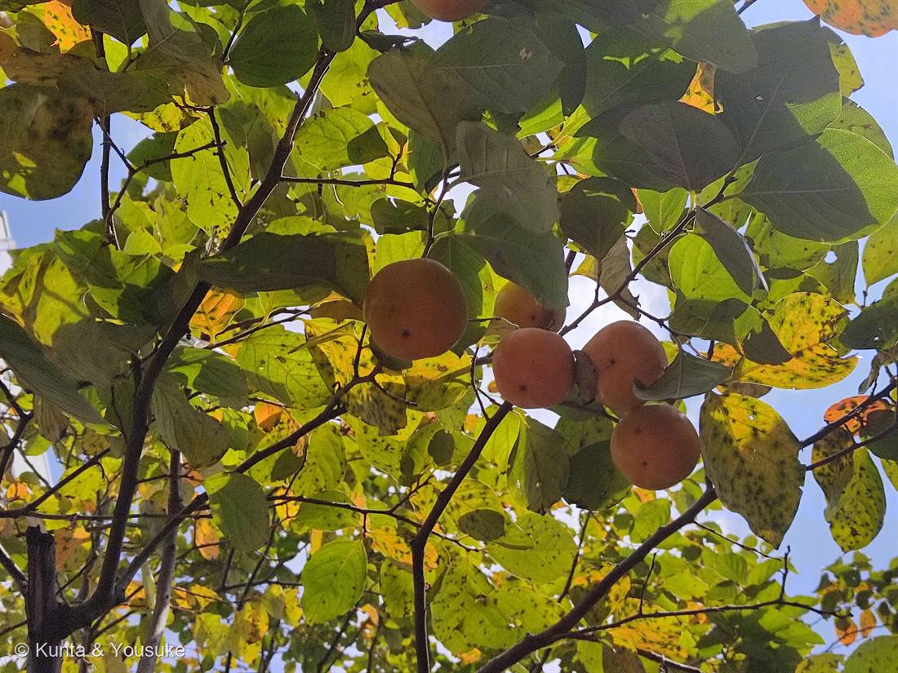
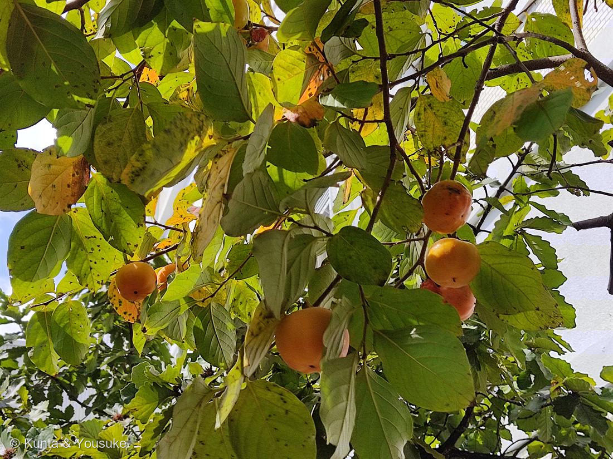

地図を読み込んでいるよ…
🔍 写真も地図も、押しているあいだ拡大して見られるよ（スマホは指を置いてすこし待ってね）。
🌍 の地図＝この子がもともと自生している場所を緑に。東アジア（中国・日本で古くから栽培）。
⚠中国と日本、どちらが「もと」なのかは、はっきり分けられない——どちらでも大昔から育てられてきた子だから、両方塗ったよ。
⚠ 地図は国（日本と中国だけ県・省）までしか塗れないから、ほんとうの分布より広く見えていることがあるよ。地図はだいたいの場所。正確なところは、上の文を見てね。
カキ（柿）
Diospyros kaki Thunb.
別名 · カキノキ ／ 英名 kaki, persimmon
カキノキ科 · Ebenaceae（カキノキ属）── この図鑑で初めての科
陽介の大好物フルーツ 3人目燻太さんは「得意じゃないけど、実の形と肌触りが好き」Diospyros ＝「神さまの食べ物」
名前と学名の由来 ── 初めての科
- Diospyros（ディオスピロス）＝ギリシャ語 Dios（神・ゼウスの）＋ pyros（穀物・食べ物）＝「神さまの食べ物」。kaki＝日本語の「柿」がそのまま学名に。
- ⭐カキノキ科（Ebenaceae）は、この図鑑で初めての科。⭐同じカキノキ属（Diospyros）には、黒くて硬い最高級木材「黒檀（こくたん・エボニー）」がある（Ebenaceae＝エボニーの科）。柿の実も、黒檀の木も、同じ一族。
- ⭐陽介の大好物「熊のごちそうフルーツ」の3人目（023 ブルーベリー・043 ワイルドストロベリーに続く）。燻太さんは「あんまり得意じゃない」けど、実の形と肌触りが好き——わかるなあ、あのぷっくり。
燻太さんのヒント、ぜんぶ的中
- 🍣⭐「葉っぱでお寿司を作る地方」＝柿の葉寿司（奈良・和歌山）。柿の葉はタンニンを多く含み、抗菌・防腐のはたらきがあるので、鯖や鮭の押し寿司を包んで日もちさせる。葉の渋み成分が、保存の知恵になった。
- 🍫⭐「チョコレートみたいな果実を作る近縁種」＝ブラックサポテ（Diospyros nigra・同じカキノキ属）。熟すと中身が黒く、なめらかで、チョコレートプリンのような味＝英名 chocolate pudding fruit。柿の親戚に、こんな子がいる。
⭐⭐ 甘柿になるのは、遺伝の“6つそろい踏み”
- 柿には渋柿（渋くて生食できない）と甘柿（樹の上で渋が抜けて甘い）がある。この「甘い／渋い」が、燻太さん（分子遺伝学者）に刺さる話：
- ⭐カキは六倍体（染色体を6セット持つ）。そして「完全甘柿」になるのは、劣性の一遺伝子（AST座）で決まる。
- ⭐⭐つまり、6セット全部が劣性（ast）にそろって、はじめて甘柿になる。渋柿が“ふつう”で、甘柿は「6コピーそろい踏み」の、めったに起きない当たりくじ（日本で生まれた形質）。だから世界的にも、甘くて生で食べられる柿は貴重なんだ。
⭐ 渋が抜けるしくみ ── タンニンの“不溶化”
- 渋の正体は柿タンニン（プロアントシアニジン）。⭐タンニンが水に溶けている間だけ、舌が「渋い」と感じる。
- ⭐熟すと、実の中で アセトアルデヒド が増え、水溶性のタンニン同士を橋渡し（架橋）して、水に溶けない大きな塊にする＝舌にくっつかなくなる＝もう渋く感じない（＝脱渋）。甘柿は樹上で自然にこれが起きる。
- ⭐渋柿の脱渋も、同じ「不溶化」を人が起こす：干し柿（乾燥）、アルコール（渋抜き）、CO₂（炭酸ガス脱渋）。タンニンは無くなっていない——溶けなくしただけ。